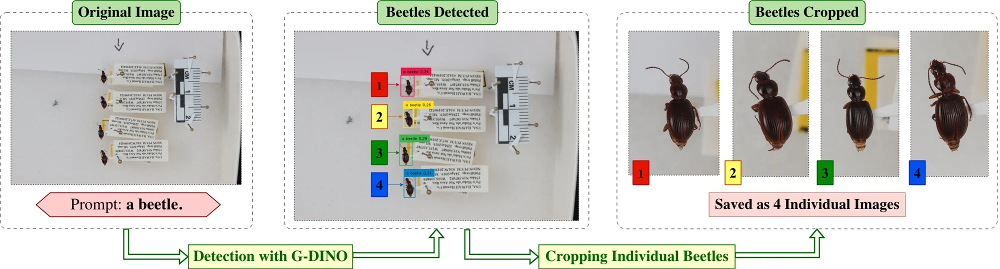
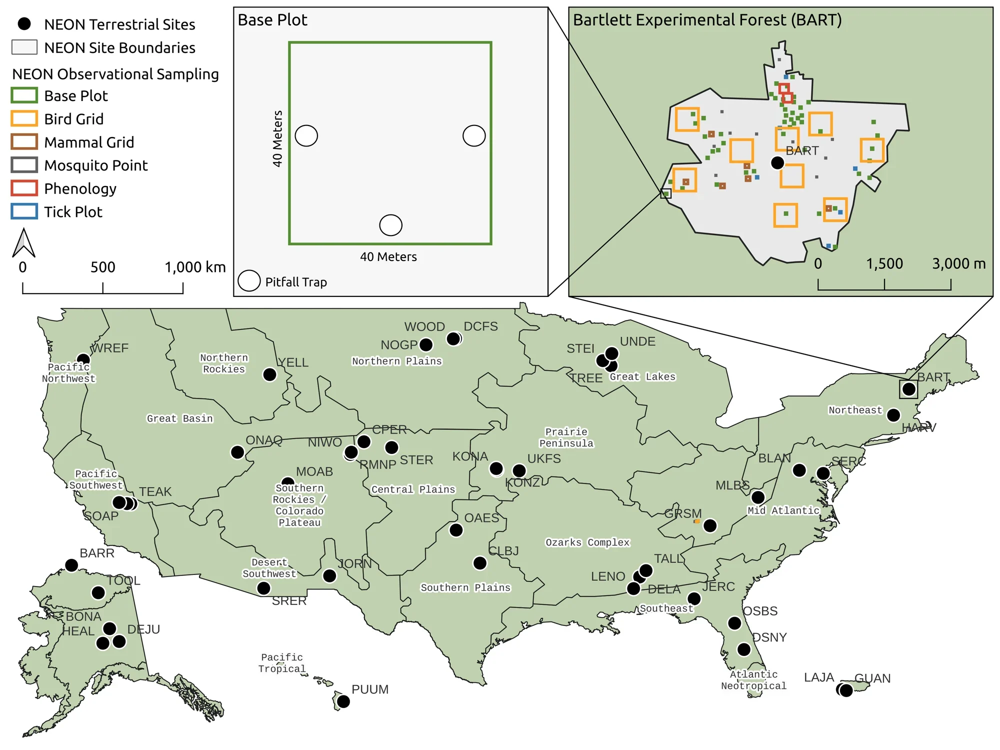
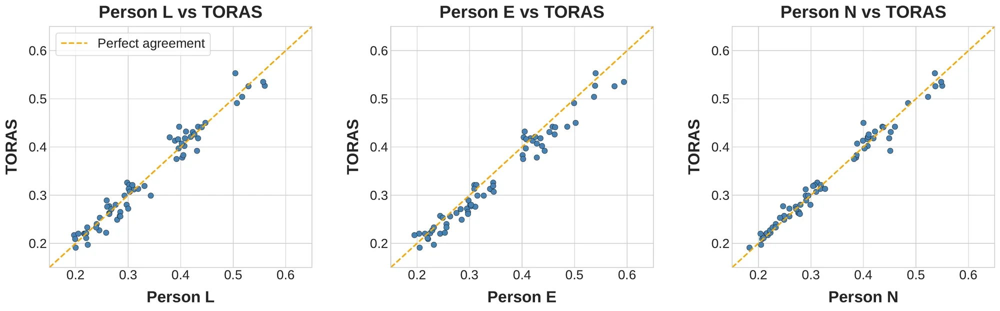

A continental-scale dataset of ground beetles with high-resolution images and validated morphological trait measurements
Scientific Data (Nature Portfolio), Data Descriptor

13,200+ specimens from 30 sites, imaged at high resolution with 39,064 validated measurements, as ground truth for learning trait extraction from images.
Trait databases cover vertebrates and plants far better than invertebrates, and most invertebrate collections exist only as physical specimens. Turning them into machine-learning data needs high-resolution imaging, per-specimen crops and measurements that can be trusted.
We digitized ground beetles from the National Ecological Observatory Network across the continental United States and Hawaii. Specimens are extracted from group images with open-vocabulary detection, and elytra length and width are measured on every image. Image measurements agree closely with calipers on the physical specimens.
From group images to specimens

Data records
Hawaii-beetles
| Specimens | Pinned, NEON Pu'u Maka'ala site |
|---|---|
| Images | 162 group images, 1,614 individual crops at 6960 x 4640 px |
| Traits | 1,579 trait rows, 14 endemic species |
| License | CC BY 4.0, DOI 10.57967/hf/7272 |
2018-NEON-beetles
| Specimens | Ethanol-preserved, 2018 collections |
|---|---|
| Images | 577 group images, 11,654 individual specimens at 5568 x 3712 px |
| Traits | 39,064 elytra measurement records, segmentation splits |
| License | CC BY-SA 4.0, DOI 10.57967/hf/6890 |
Coverage
| Sites | 30 of 47 NEON terrestrial sites, in 14 of 20 ecoclimatic domains |
|---|---|
| Taxa | 79 species among vial specimens and 14 Hawaiian species among pinned specimens |
| Resolution | Mean pixel density of 97 px/cm for vial images and 785 px/cm for pinned images |
| Code | Imageomics/carabidae_beetle_processing |

Validation
| Three annotators, vial images | Elytra length R² 0.94, RMSE 0.075 cm, on 234 images |
|---|---|
| Two observers, calipers | R² 0.94, RMSE 0.024 cm on pinned specimens |
| Image tool (TORAS) vs calipers | R² 0.977, RMSE 0.015 cm, bias 0.006 cm |

Related work
Fine-Grained Beetle Taxonomy with Vision Models: A Benchmark on Long-Tailed and Domain-Adaptive Classification
ICCV 2025 Workshop on Computer Vision for Ecology (CV4E)BeetleFlow: An Integrative Deep Learning Pipeline for Beetle Image Processing
NeurIPS 2025 Workshop on ImageomicsFrom collection trays to AI-ready data: An operational framework for automated entomological specimen processing
Methods in Ecology and Evolution (under review)
Cite
@article{rayeed2026continental,
title = {A continental-scale dataset of ground beetles with high-resolution images and validated morphological trait measurements},
author = {Rayeed, S. M. and Khurana, Mridul and East, Alyson and Fluck, Isadora E. and Campolongo, Elizabeth G. and Stevens, Samuel and Zarubiieva, Iuliia and Lowe, Scott C. and Denslow, Michael W. and Donoso, Evan D. and Wu, Jiaman and Ramirez, Michelle and Baiser, Benjamin and Stewart, Charles V. and Mabee, Paula and Berger-Wolf, Tanya and Karpatne, Anuj and Lapp, Hilmar and Guralnick, Robert P. and Taylor, Graham W. and Record, Sydne},
journal = {Scientific Data},
year = {2026},
doi = {10.1038/s41597-026-08120-3}
}